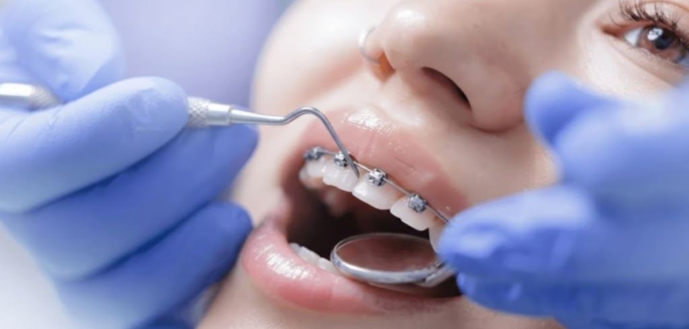

치아와 턱의 비정상적인 위치를 교정하여
미소와 턱의 기능을 향상시키는 치료과정입니다.
치아의 이상적인 위치와 상태를 재조정하여
아름다운 스마일 라인과 건강한 구강을 선사합니다.
Orthodontics
치아교정 솔루션
치아교정이란?
치아교정은 치아와 턱의 비정상적인 위치나 교합 문제를 전문 교정 장치를 이용하여 바르게 교정하는 치료과정입니다. 턱과 치아의 위치를 조정하여 교합과 치아의 기능을 안정시키고, 변화된 턱의 길이와 위치를 조절하여 턱과 안면 근육의 균형을 맞출 수 있습니다. 아름다운 스마일 라인과 함께 건강한 구강 기능을 되찾을 수 있습니다.
교정유형 선수술 교정, 주걱턱 교정, 안면비대칭 교정, 돌출입 교정, 부분교정, 설측교정 등
시술 정보
선수술 교정이란?
수술 먼저, 교정은 나중에
선수술 교정은 기존의 '교정 → 수술' 순서를 역전시켜, 턱수술을 먼저 시행한 뒤 교정 치료를 진행하는 방법입니다. 수술을 통해 골격적 부조화를 먼저 해결하므로 외모 개선이 빠르게 이루어지며, 비정상적인 골격이 정상 골격으로 바뀌면서 심미적 만족감을 조기에 얻을 수 있습니다.
수술 후 변화된 턱과 치아의 위치를 정밀하게 재조정하여 교합과 치아의 기능을 안정시키고 회복시키는 것이 핵심 목적이며, 전통적인 교정-수술 방식 대비 전체 치료 기간을 단축할 수 있는 장점이 있습니다.


수술 전 정밀 분석
3D CT와 구강 스캔을 통해 골격 및 치아 상태를 정밀하게 분석하고, 환자의 얼굴 형태와 교합 상태를 종합적으로 평가하여 최적의 수술 계획을 수립합니다.

수술 직후
골격적 부조화를 해결하고 심미적 개선의 기반을 마련하는 단계입니다. 수술을 통해 비정상적인 골격이 정상 위치로 이동하여 외모 개선이 빠르게 나타납니다.

수술 후 교정 중
변화된 턱 위치에 맞춰 치아 교합을 정밀하게 조정하는 과정입니다. 교정 장치를 통해 치아를 이상적인 위치로 이동시켜 안정적인 교합을 달성합니다.

수술 후 교정 완료
안정된 교합과 아름다운 스마일 라인을 완성하는 최종 단계입니다. 유지장치를 통해 교정 결과가 오랫동안 유지될 수 있도록 관리합니다.
스마일뷰 교정의 장점
빠른 심미적 개선
수술을 먼저 시행하여 외모 개선이 빠르게 이루어지며, 정상 골격으로의 변화를 통해 조기에 심미적 만족감을 경험할 수 있습니다.
기능적 교합 회복
올바른 저작 기능과 턱 관절의 균형을 되찾아 전반적인 구강 건강을 향상시키고 안정적인 교합을 달성합니다.
교정과 전문의 협진
수술 계획부터 세심한 분석이 필요하기에, 교정과 의료진과의 긴밀한 협진을 통해 최적의 치료 결과를 도출합니다.
체계적 사후관리
유지장치 관리와 정기 검진을 통해 교정 결과가 오랫동안 안정적으로 유지될 수 있도록 체계적인 사후관리를 제공합니다.
양악수술과 함께하는 교정 치료
양악수술은 위턱과 아래턱의 골격 및 치아의 부정교합을 치료하고, 심미적인 얼굴 골격과 정상적인 교합을 얻고자 하는 수술입니다. 각 교정 유형을 클릭하여 자세한 정보를 확인하세요.
아래턱 돌출로 인한
주걱턱 교정
아래턱 성장이 과도하거나 위턱 성장이 부족해 아래턱이 돌출된 경우 진행하는 교정입니다. 골격적 부조화를 해결하여 얼굴 균형과 정상적인 교합을 회복시킵니다.
자세히 보기

좌우 균형을 되찾는
안면비대칭 교정
얼굴의 상하 길이 혹은 좌우 대칭의 균형이 맞지 않을 때 진행하는 교정입니다. 턱의 비대칭을 교정하여 균형 잡힌 얼굴 라인과 안정적인 교합을 달성합니다.
자세히 보기

자연스러운 옆모습을 위한
돌출입 교정
코 끝이나 턱 끝에 비해 입이 앞으로 돌출되어 옆모습 개선이 필요한 경우 진행하는 교정입니다. E-line을 개선하고 자연스러운 입술 라인을 되찾아 드립니다.
자세히 보기주걱턱 교정
아래턱 성장이 과도하거나 위턱 성장이 상대적으로 부족하여 아래턱이 튀어나온 경우 진행하는 교정으로, 골격적 부조화를 해결하여 얼굴 균형과 정상적인 교합을 회복시킵니다.
아래턱 돌출로 인한
얼굴 불균형 개선
주걱턱(하악전돌증)은 아래턱이 위턱보다 앞으로 나와 있는 상태로, 옆에서 보았을 때 아래턱이 돌출되어 보이고 정면에서는 얼굴이 길어 보이는 특징이 있습니다. 저작 기능의 저하뿐 아니라 발음 문제, 턱관절 장애를 동반할 수 있어 적극적인 교정이 필요합니다.
이런 분들에게 필요합니다
아래턱이 위턱보다 앞으로 나온 경우
얼굴이 길어 인상이 강해보이거나 나이가 들어 보이는 경우
위아래 치아가 거꾸로 물려 저작 효율이 떨어지는 경우
안면비대칭 교정
얼굴의 상하 길이 혹은 좌우 대칭의 균형이 맞지 않을 때 진행하는 교정으로, 턱의 비대칭을 교정하여 균형 잡힌 얼굴 라인과 안정적인 교합을 동시에 달성합니다.
좌우 균형을 되찾는
안면 대칭 교정
안면비대칭은 위턱 또는 아래턱의 좌우 길이가 다르거나, 턱이 한쪽으로 치우쳐 얼굴의 정중선이 어긋나는 상태입니다. 심미적 문제뿐 아니라 한쪽으로 편중된 저작 습관, 턱관절 통증, 치아 정중앙선의 불일치 등 기능적 문제를 동반할 수 있습니다.
이런 분들에게 필요합니다
위턱의 좌우 길이가 맞지 않는 경우
아래턱의 좌우 대칭이 맞지 않는 경우
치아의 정중앙선이 위아래 치아끼리 많이 어긋난 경우
돌출입 교정
옆에서 보았을 때 코 끝이나 턱 끝에 비해 입이 앞으로 돌출된 경우 진행하는 교정으로, 옆모습의 E-line을 개선하고 자연스러운 입술 라인을 되찾아 드립니다.
자연스러운 옆모습을 위한
돌출입 개선
돌출입은 치아나 치조골이 앞으로 돌출되어 입이 나와 보이는 상태로, 입을 다물기 어렵거나 무의식적으로 입이 벌어지는 증상을 동반할 수 있습니다. 긴 얼굴, 안면비대칭, 잇몸과다노출(거미스마일) 등을 동반하는 경우가 많으며, 정확한 진단을 통해 개인에 맞는 최적의 교정 방법을 적용합니다.
이런 분들에게 필요합니다
긴 얼굴을 동반한 돌출입의 경우
안면비대칭을 동반한 돌출입의 경우
잇몸과다노출을 동반한 돌출입의 경우